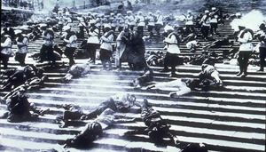
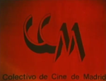
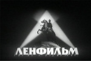
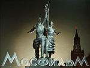
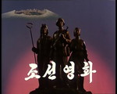
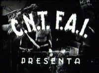

Cine - La web de emijrp
Véase también: Cine mudo en España, Filmotecas, Estadísticas de cine, Documentales y Series
{kind=link}
El cine es una de las artes más difundidas e influyentes que existen y eso que surgió hace poco más de un siglo.
Hay bases de datos con decenas de miles de películas como Internet Movie DataBase (350.000), FilmAffinity (128.000) o Abandonmoviez (83.000). La propia Wikipedia dispone de incontables listados temáticos, centralizados en la página Lists of films y su respectiva categoría. Otras webs como RebeldeMule también recopilan miles de fichas de películas.
Pero entre tanta información conviene tomar notas para no perderse y poder seguir explorando. En esta página hago mi particular selección de géneros cinematográficos, estudios de cine y productoras, festivales, movimientos, directores y películas. Se encuentra en permanente ampliación.
Mis puntuaciones a las películas que he visto las encontrarás en otra página, junto a algunas Estadísticas de cine.
Géneros cinematográficos
Estos son los principales géneros cinematográficos que estoy revisando. Algunas de las obras indicadas como ejemplo pueden pertenecer a más de un género:
- Anarquista: tanto obras que traten el anarquismo como películas creadas por movimientos o colectivos anarquistas, principalmente durante la colectivización de la industria del cine de Barcelona en la Guerra Civil Española. Por ejemplo: Aurora de esperanza (1937), Barrios bajos (1937), Carne de fieras (1936) y Nuestro culpable (1938). (Más información: Cine y Anarquismo, El anarquismo en el cine)
- Bélico: relatan guerras o batallas, ya sea por tierra, mar o aire, o también la vida civil durante estas contiendas, por ejemplo: El hundimiento (2004), Enemigo a las puertas (2001) y Tierra y Libertad (1995). El conjunto de películas contra la guerra en general o específicas como la Guerra de Vietnam conforman el género anti-belicista, por ejemplo: Apocalypse Now (1979), Hiroshima mon amour (1959), La chaqueta metálica (1987) y Senderos de gloria (1957). (Más información: War film, Category:Films by war, Category:Lists of war films, Anti-war film)
- Biográfico: dedicadas a la vida y obra de alguna persona determinada. Ejemplos: Allende en su laberinto (2014), Che (2008), El loco del pelo rojo (1956), El tren de Lenin (1988), La Raulito (1975), Lumumba (2000), Malcolm X (1992) y Rosa Luxemburgo (1986).
- Contestatario: es sinónimo del cine que cubre aspectos sociales, es reivindicativo, de denuncia, etc. Se solapa con varios de los otros géneros de esta lista.
- Drama judicial: dramatización de procesos judiciales. Por ejemplo: En el nombre del padre (1993) y La caja de música (1989). (Más información: Legal drama, Category:Courtroom films)
- Eastern/Ostern: ambientados en las estepas o en las regiones asiáticas de la URSS, especialmente durante la Revolución rusa de 1917 o en la posterior guerra civil. Por ejemplo: Las millas ardientes (1957), En el hogar entre extraños (1971) y Sol blanco del desierto (1969). (Más información: Ostern)
- Épico: son grandes producciones de tipo dramático situadas en periodos de guerra o conflicto. Por ejemplo: Espartaco (1960), Jasón y los Argonautas (1963), La lista de Schindler (1993) y Braveheart (1995). (Más información: Cine épico)
- Feminista: obras que presentan a la mujer sin estereotipos, dueñas de si mismas y sus acciones, que luchan por cambiar las viejas normas que las han atado siempre. Por ejemplo: Pan y tulipanes (2000) y Thelma y Louise (1991). (Más información: Películas feministas, Películas feministas de la historia y su segunda parte, 70 películas sobre la situación de la mujer en el mundo)
- Histórico: tomando sucesos históricos o personajes notables de la historia construyen una dramatización próxima a la realidad, aunque también pueden incluir elementos de ficción. Por ejemplo: Amadeus (1984), El acorazado Potemkin (1925), Lincoln (2012) y Octubre (1928). (Más información: Historical period drama, List of historical period drama films)
- Indígena: también llamado indigenista.
- Partisano: películas bélicas de la República Federativa Socialista de Yugoslavia de los años 60, 70 y 80. Ambientadas en la Segunda Guerra mundial, tiene como protagonistas a los partisanos que luchan contra el fascismo y sus colaboradores. Por ejemplo: La batalla del río Neretva (1969). (Más información: Partisan film, Category:Partisan films)
- Político: a diferencia del cine de puro entretenimiento vacío y supuestamente apolítico, este presenta una postura comprometida políticamente. Por ejemplo: La Chinoise (1967), La sal de la tierra (1953), Lumumba (2000) y Z (1969). (Más información: Political cinema, Category:Political films)
- Quinqui: (Más información: Cine quinqui)
- Tercer cine: movimiento fílmico latinoamericano de los años 60 y 70 que rechaza el neocolonialismo, el sistema capitalista y el modelo de Hollywood como mero entretenimiento para hacer dinero. El término se acuñó en el manifiesto Hacia un tercer cine redactado por los cineastas argentinos Fernando Solanas y Octavio Getino, miembros del Grupo Cine Liberación. Este género también incluye el Cine de la Base de Raymundo Gleyzer, el brasileño Cinema Nôvo, el cine revolucionario cubano y al director boliviano Jorge Sanjinés. (Más información: Third Cinema, Cinema Novo, Cinema of Cuba#Cinema after the revolution, Grupo Cine Liberación)
- Social: tratando temas como el alcoholismo, derechos civiles, inmigración, marginación, pobreza, paro, prostitución, etc. Por ejemplo: La vendedora de rosas (1998), Los lunes al sol (2002), Malcolm X (1992) y Princesas (2005). (Más información: Cine social, Categoría:Cine social)
- Western rojo/Borscht Western: son la versión soviética y de los países del bloque del Este al género Western. Por ejemplo Joe Cola-Loca (Checoslovaquia, 1964), Los hijos de Gran Oso (RDA, 1966), El petróleo, el bebé y los transilvanos (Rumanía, 1981) o El hombre del boulevard de los Capuchinos (URSS, 1987). (Más información: Ostern, Category:Red Western films)
- Zapata Western: películas de los años 60 y 70 abiertamente políticas sobre la Revolucion Mexicana. (Más información: Zapata Western)
Estudios de cine, distribuidoras y productoras
|  |
|  |
|  |
 |
|  |
{kind=link}
{kind=link}
{kind=link}
{kind=link}
- Central del Curt / Central del Corto: distribuidora alternativa que funcionó en los años 70 en España y que contó con un catálogo de más de 120 obras, la mayoría cortos y mediometrajes. Entre sus miembros destacaban Llorenç Soler, Helena Lumbreras y Mariano Lisa, quienes fundaron la productora Cooperativa de Cinema Alternatiu para sus propias películas. En 1980 la Central se legaliza constituyéndose como Sociedad Cooperativa Central del Curt. Un año después organizan la I Mostra de Cinema Marginal a Catalunya. En 1982 deja de funcionar, cediendo sus fondos a la Federació Catalana de Cineclubs. (Más información: Artículo REvista, num.0, verano 2005, Bibliografía)
- Chile Films: Por desarrollar.
- Colectivo Cine de Clase: co-fundado por Helena Lumbreras, cineasta antifranquista, que había iniciado su carrera en Italia haciendo documentales para la RAI y colaborando con figuras como Fellini, Rosi, Pontecorvo y Pasolini. El objetivo de este colectivo era "filmar sueños de personas que estaban luchando para conseguir mejorar sus condiciones de vida". (Más información: Helena Lumbreras y el Colectivo Cine de Clase)
- Colectivo de Cine de Madrid: grupo compuesto inicialmente por Andrés Linares, Tino Calabuig y Adolfo Garijo que rodaron de 1975 a 1977 imágenes de la oposición en España a la dictadura franquista, con el peligro que ello suponía, tratando de evitar ser detenidos por la policía. Sus obras recogen manifestaciones, conciertos, entierros... Amnistía y Libertad, Concierto de Gijón, Concierto de Raimon, Hasta siempre en la libertad y Vitoria (2ª parte). (Más información: Web oficial, Canal de YouTube)
- Cooperativa de Cinema Alternatiu / Cooperativa de Cine Alternativo: productora de la Central del Curt, compuesta por dos grupos que filmaban por separado. Uno era el Col·lectiu S.P.A. (siglas de Salvador Puig Antich) que realizaron Viaje a la explotación (1974) y Entre la esperanza y el fraude (1977). El segundo grupo rodó Carn crua (1975), Un libro es un arma (1975) y Can Serra, la objeción de conciencia en España (1976). También produjeron tres noticieros La Marxa de la llibertat, La dona y El Born. (Más información: El cine de la disidencia. La producción militante antifranquista 1967-1981)
- Cooperativa Obrera Cinematográfica: organización creada en el verano de 1936, afín al PCE, al Sindicato General de la Cinematografía y a los Sindicatos de la Industria Cinematográfica de la UGT. Produjo documentales de Fernando G. Mantilla como Julio 1936 (1936) y ¡¡Pasaremos!! (1936). También distribuyó clásicos del cine soviético.
- DEFA: los estudios de cine de la República Democrática Alemana fundados en 1946. Produjo un total de 950 largometrajes, 820 películas animadas, más de 5.800 documentales y unos 4.000 doblajes de obras extranjeras. Algunas películas notables son El asesino está entre nosotros (1946) y Los hijos de la gran madre osa (1966). (Más información: Deutsche Film-Aktiengesellschaft, DEFA Film Library, List of East German films)
- Estudios de Cine Gorki: fundado en 1915, en él se rodó la primera película soviética de ciencia ficción, Aelita: Reina de marte (1924), en la que un joven viaja a Marte en un cohete para dirigir un levantamiento popular contra el rey. También se grabó la primera película soviética sonora El camino de la vida (1931) y la primera en color Nightingale (1936) ambas de Nikolai Ekk. Al final de la Unión Soviética este estudio había filmado más de 1000 películas. Fue renombrado muchas veces antes de ser dedicado a Máximo Gorki. Su nombre completo era Estudio Central de Cine Máximo Gorki para la Infancia y la Juventud. (Más información: Gorky Film Studio es)
- Films Popular: productora y distribuidora del noticiario España al día y de numerosos documentales. Afín al PCE y PSUC.
- Fuego Rojo Producciones: Por desarrollar.
- Instituto Cubano del Arte e Industria Cinematográficos: establecido en 1959 tras la Revolución Cubana. (Más información: ICAIC)
- Korean Film Studio: Por desarrollar.
- Laya Films: productora catalana de los noticiarios Noticiari Laya Films y Espanya al día y de numerosos documentales tanto del frente como de la retaguardia republicanas.
- Lenfilm: fundado en 1908, durante su evolución tuvo varios nombres Comité de Cine de Petrogrado, SevZapKino y Fábrica de Cine de Goskinó de Leningrado, llegó a ser el segundo más grande por detrás de Mosfilm, produciendo unas 1.500 obras. (Más información: Lenfilm)
- Mezhrabpomfilm: estudio germano-soviético activo de 1928 a 1936, tiempo en el que produjo cerca de 60 películas. Absorbido por Estudios de Cine Gorki. (Más información: Mezhrabpomfilm)
- Mosfilm: creado en 1920, produjo más de 3.000 películas, muchas de ellas clásicos. Entre las más destacadas están obras de los directores Serguéi Eisenstein como El acorazado Potemkin (1925), Aleksandr Nevski (1938) e Iván el Terrible (1946), y de Andréi Tarkovski como La infancia de Iván (1962), Andréi Rubliov (1966) y Solaris (1972). (Más información: Mosfilm, Anexo:Películas destacadas de Mosfilm)
- Sindicato de la Industria del Espectáculo: también llamado SIE Films dirigido por la CNT-FAI produjo numerosos documentales y cortometrajes como Los aguiluchos de la FAI por tierras de Aragón (1936) y Madrid tumba del fascio (1936), largometrajes como Aurora de esperanza (1937) y Barrios bajos (1937) y el noticiario España gráfica.
- Societe pour le Lancement des Oeuvres Nouvelles: también conocida como SLON. (Más información: IMDB)
- Soyuzmultfilm: Por desarrollar.
- Spartacus Films: productora anarquista de Madrid del noticiario Momentos de España.
Festivales de cine
Para estar al tanto de las nuevas películas que salen cada año, es útil repasar las candidaturas y premios de los distintos festivales:
- Festival de Cine de Vietnam: dedicado al cine de Vietnam, se celebra cada dos o tres años en una ciudad distinta desde 1970. Entre las categorías valoradas se encuentran largometrajes, animación y documentales. (Más información: Vietnam Film Festival)
- Festival Internacional de Cine de Karlovy Vary: celebrado en Checoslovaquia en años alternos con el Festival Internacional de Cine de Moscú desde 1946 a 1989. Desde 1994 tiene lugar anualmente.
- Festival Internacional de Cine de Moscú: tiene lugar en Moscú, Rusia, desde 1959 cada dos años y a partir de 1999 anualmente. La mayor distinción recibe el nombre de San Jorge de Oro. (Más información: Moscow International Film Festival)
- Festival Internacional de Cine de Pyongyang: se celebra cada dos años en Pyongyang, Corea del Norte. Fue creado en 1987 con el nombre de Festival de cine de Pyongyang de los no alineados y otros países en desarrollo y se mostraron cortos, largometrajes y documentales. En las últimas ediciones se han superado las 100 películas exhibidas. (Más información: Pyongyang International Film Festival (ru))
- Festival Internacional de Cine del Sáhara: comenzado en 2003 y conocido como FiSahara, se celebra anualmente en los campos de refugiados saharauis. (Más información: Sahara International Film Festival)
- Festival Internacional de Cine Documental de Leipzig: fundado en 1955 y realizado en Leipzig, República Democrática Alemana. (Más información: Dok Leipzig)
- Festival Internacional del Nuevo Cine Latinoamericano de La Habana: dedicado a dar a conocer a cineastas latinoamericanos, comenzó su andadura en 1979 de la mano del Instituto Cubano del Arte e Industria Cinematográficos. Se celebra todos los años en La Habana, Cuba, y se otorgan unos 40 premios en diversas categorías. (Más información: Havana Film Festival, EcuRed)
Manifiestos y movimientos cinematográficos
- Neorrealismo italiano: movimiento surgido en Italia tras la Segunda Guerra Mundial en el que se presentan principalmente historias de la clase trabajadora, empleando para ello en su mayoría actores no profesionales. Su nombre fue acuñado por Umberto Barbaro y la primera película de este tipo se considera Roma, ciudad abierta (1945) de Roberto Rossellini. Otros cineastas de esta corriente incluyen a Luchino Visconti con La tierra tiembla (1947) y Vittorio De Sica con Ladrón de bicicletas (1948). (Más información: Neorrealismo italiano)
Cine anarquista
{kind=link}
Al poco tiempo de comenzar la Guerra Civil Española, la CNT-FAI colectivizó la industria del cine de Barcelona, quedando la creación de películas en manos de los trabajadores a través de los sindicatos, entre ellos el Sindicato de la Industria del Espectáculo (SIE). En un período de tiempo muy corto, de 1936 a 1938, se filmaron una gran cantidad de películas, incluyendo dramas sociales como Aurora de esperanza (1937) o Barrios bajos (1937), comedias musicales como Nuestro culpable (1938), documentales sobre la guerra como Alas negras (1937), etc.
Un gran número de grabaciones se perdieron y otras se encuentran en la actualidad en la Filmoteca de España. A continuación un listado más exhaustivo del cine libertario de la época:
- Puche, Pedro: Barrios bajos (1937)
- Sau Olite, Antonio: Aurora de esperanza (1937).
- Los aguiluchos de la FAI por tierras de Aragón. Estampas de la revolución antifascista (1936)
Cine sobre la resistencia en la Segunda Guerra Mundial
En cada país ocupado durante la Segunda Guerra Mundial hubo sectores de la población que lucharon contra el enemigo invasor formando movimientos de resistencia. (Más información: Resistance during World War II)
- Resistencia frente a los nazis en Alemania
- Rothemund, Marc: Sophie Scholl: Los últimos días (2005).
- Resistencia frente a los nazis en Bielorrusia
- Klimov, Elem: Masacre: ven y mira (1985).
Cine político, social, histórico...
A continuación algunas películas con bastante carga política, que tratan temas sociales, cubren acontecimientos históricos, etc.
|
|
Cine por época y país
Hay películas poco conocidas que se han filmado en ciertos períodos de la historia y países concretos Haciendo búsquedas en las bases de datos de cine usando rangos de fechas y país, es posible encontrar por ejemplo cine producido durante el Chile de Salvador Allende (1970-1973). Estas son algunas de ellas.
- Afganistán
- Rahimi, Atiq: La piedra de la paciencia (2012).
- Irán
- Farrokhzad, Forugh: La casa es negra (1963).
- República de Chile
- Littin, Miguel: Compañero Presidente (1971).
- República de Cuba
- Álvarez, Santiago: El tigre saltó y mató, pero morirá... morirá... (1973) y Now (1965).
- Gutiérrez Alea, Tomás: Guantanamera (1995).
- (Más información: Cinema of Cuba)
- República Popular Democrática de Corea (Corea del Norte)
- Ik Kyu, Choe: La florista (1972).
- In-hak, Jang: Diario de una alumna (2006).
- Soon Jo, Kyun: Campanilla (1987).
- Unión Soviética
- Eisenstein, Sergei: El acorazado Potemkin (1925) y Octubre (1928).
- Klimov, Elem: Masacre: ven y mira (1985).
- Kuleshov, Lev: Los siberianos (1940).
- Protazanov, Yakov: Aelita: la reina de Marte (1924).
- Raizman, Yuli: Berlin (1945).
- Romm, Mikhail: El facismo ordinario (1965).
Cine de otros temas y géneros
Algunas películas de otros temas y géneros: ciencia ficción, dramas, thrillers y alguna comedia.
|
|
Bibliografía
En esta bibliografía incluyo referencias a documentación en diversos formatos con la que seguir explorando este tipo de cine.
Publicaciones
- Bollero Real, David. Sáhara Occidental: La revolución del cine o el cine de la revolución. Quaderns 7, 2011, pp. 93-102.
- Crussels, Magí. El cine durante la Guerra Civil española. Comunicación y sociedad, Volumen XI, Núm. 2, 1998, pp. 123-152.
- De Francisco, Israel; Planes Pedreño, José Antonio; Pérez Romero, Enrique (Ed.). La mujer en el cine español. Arkadin Ediciones, 2010.
- De la Madrid, Juan Carlos. Primeros tiempos del cinematógrafo en España. Universidad de Oviedo, 1997.
- Douglas, María Eulalia. Diccionario de cineastas cubanos (1959-1987). ULA, 1989.
- Fernández López, Daniel. Tomás Gutiérrez Alea, el cine y cuba: desde historias de la revolución hasta Guantanamera, 2013.
- García Espinosa, Julio. Por un cine imperfecto, 1969.
- Getino, Octavio y Solanas, Fernando. Hacia un tercer cine: Apuntes y experiencias para el desarrollo de un cine de liberación en el tercer mundo, 1969.
- González-Fierro de Santos, José Manuel. La opresión y la represión de la mujer vista por la historia del cine. 2011.
- González López, Palmira. Los inicios del Cine en España (1896 - 1909). La llegada del cine, su expansión y primeras producciones.
- Iglesias Turrión, Pablo. Maquiavelo frente a la gran pantalla. Akal, 2013.
- Iglesias Turrión, Pablo. Cuando las películas votan. Lecciones de ciencias sociales a través del cine. Catarata, 2013.
- Juan Payán, Miguel. La historia de España a través del cine. Cacitel, 2007.
- Martínez Muñoz, Pau. La cinematografía anarquista en Barcelona durante la Guerra Civil (1936-1939), 2008.
- Pérez Romero, Enrique; González-Fierro de Santos, José Manuel. La lucha obrera en el cine. Sindicalismo y derechos de los trabajadores en la gran pantalla. Arkadin Ediciones, 2011.
- Rocha, Glauber. La estética del hambre.
- Serrano, Daniel L. Armand Guerra, renaciendo de la metralla, 2014.
- Serrano, Daniel L. El cine español que se quiso que olvidáramos (Parte II), 2014.
Documentales, conferencias, programas de televisión y radio
- Días de cine. La vanguardia soviética I: Eisenstein, 21 de enero de 2011.
- Días de cine. La vanguardia soviética II: Dziga Vertov y el Cine-Ojo (Kino-Glaz), 11 de febrero de 2011.
- Días de cine. La vanguardia soviética III, 4 de marzo de 2011.
- Fort Apache. Cine: Fábrica de ideologías, 2014.
- Fort Apache. El colonialismo en los medios, 2014.
- ISKRA Radio. Cine e ideología, 7 de abril de 2014.
- La Tuerka. La Guerra Civil en el cine (2) (3) (4) (5), 2011.
- Pozo Fajarnés, José Luis. Los avatares de la URSS vistos a través del cine soviético, 28 de febrero de 2012.
Sitios web y comunidades
- Abandonmoviez
- Cine Chile, enciclopedia del Cine Chileno
- CinetecaVirtual Chilena
- Cine social, politico y revolucionario para compartir
- El cine político y revolucionario
- Progressive Film Club
- RebeldeMule
 |
Esta página fue modificada por última vez el 2017-09-26 09:58:53 (UTC) | GitHub pages |